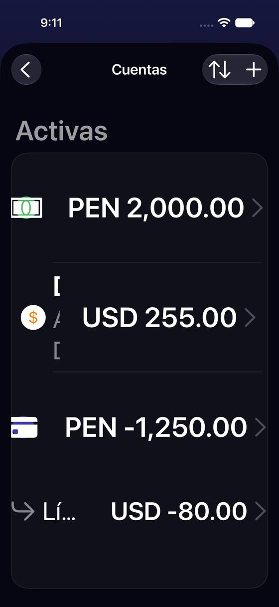
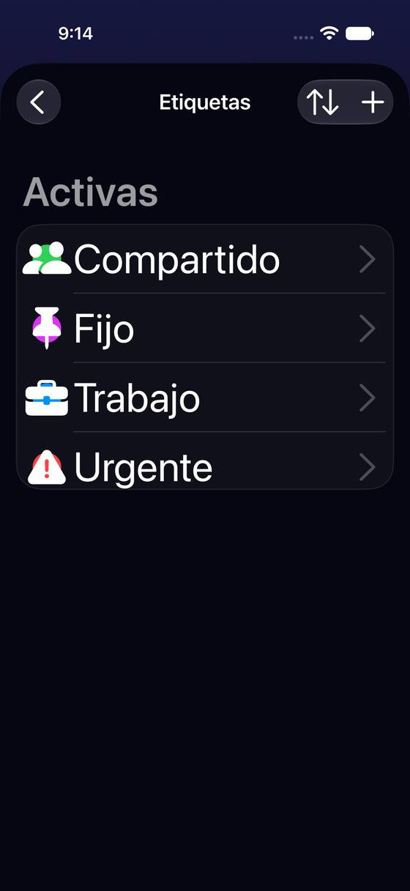
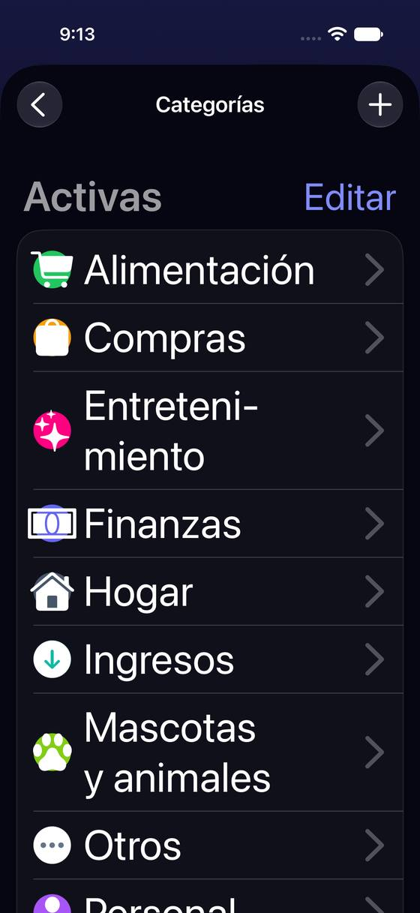

Con texto grande, Cuentas pierde los nombres y Etiquetas pierde la última fila
Hoy
Capturas del simulador (app de origin/2.3, semillas de prueba). Pasos hoy: —




De dónde sale
- Captura Capturas ax-c01, ax-e01 y ax-k01 (AX3, iPhone 17 Pro) frente a c07.
- Código Cuentas: el saldo lleva
.fixedSize(horizontal: true)y el nombre.lineLimit(1)en la misma fila (AccountsSettingsListView.listAccountRow); el alto de la lista es un cálculo a mano con@ScaledMetric. - Código Etiquetas:
.frame(height: CGFloat(count) * DS.FormRow.minHeight)(TagsSettingsListView.swift:127y:160), sin escalar con el texto.
Las opciones
De 3 a 5 alternativas con el mismo caso. Desliza cada recorrido; el anillo cian marca dónde toca Lucía.
Con texto grande, la fila se apila: nombre arriba, saldo debajo
A tamaños de accesibilidad, cada cuenta pasa a dos o tres líneas: el nombre entero arriba, el tipo debajo y el saldo en su propia línea. Es el componente que la app ya tiene para esto (AdaptiveRowStack): a tamaño normal la fila no cambia.
A favor
- Lucía reconoce cada cuenta con texto grande.
- Usa una pieza que ya existe; el tamaño normal queda al píxel igual.
En contra
- La lista se hace más larga (tres cuentas ocupan la pantalla).
Listas que miden solas su alto (Etiquetas y Cuentas)
Las listas de Etiquetas y Cuentas dejan de calcular su alto a mano (filas × alto fijo) y usan la lista de Ajustes de la app, que crece con el texto. Así no se corta ninguna fila, también con nombres de dos líneas.
A favor
- Arregla la fila perdida de raíz, en las dos listas.
- Reordenar sigue funcionando (la lista del sistema lo trae).
En contra
- Cambia la pieza de la lista: hay que volver a mirar el iPad y el modo de reordenar.
Con texto grande, menos líneas por fila
Sin cambiar la pieza: a tamaños de accesibilidad la fila de cuenta deja solo el nombre y el saldo (quita tipo y moneda, que ya dice el símbolo), y el saldo puede pasar a dos líneas en vez de empujar al nombre.
A favor
- Cambio pequeño.
- Lista más corta que H1.
En contra
- Con nombres largos y saldos grandes vuelve a no caber.
- No arregla Etiquetas.
Lado a lado
La última pantalla de cada recorrido, frente a hoy.
Comparación
| Opción | Pasos para el caso (maqueta) | Esfuerzo | Riesgo | Reabre |
|---|---|---|---|---|
| Hoy | — | — | — | — |
| H1 · Con texto grande, la fila se apila: nombre arriba, saldo debajo | — | bajo | bajo | — |
| H2 · Listas que miden solas su alto (Etiquetas y Cuentas) | — | medio | bajo | — |
| H3 · Con texto grande, menos líneas por fila | — | bajo | medio | — |
Lente de perfiles
Perfiles simulados, no entrevistas Los siete perfiles de la revisión del usuario nuevo, usados como lentes. riesgo alto de trabarse · medio · bajo.
| Perfil | Hoy | H1 | H2 | H3 |
|---|---|---|---|---|
| P1 · Migrante de Excel | — | — | — | — |
| P2 · Principiante abrumado | — | — | — | — |
| P3 · Anotador rápido que no lee | — | — | — | — |
| P4 · Experto de otra app | — | — | — | — |
| P5 · Llega por una invitación de grupo | — | — | — | — |
| P6 · Varias monedas y tarjeta | — | — | — | pierde la moneda |
| P7 · Texto grande, a veces en iPad | no ve sus cuentas ni una etiqueta | lee sus cuentas | no pierde filas | a veces corta |
Recomendación: H1
H1 y H2 juntas: H1 devuelve los nombres con la pieza que la app ya usa para esto, y H2 quita la causa de la fila perdida en las dos listas. Son correcciones de accesibilidad más que de diseño; H3 se queda corta con nombres largos.
Qué decide Jürgen
- ¿Se corrigen ya Cuentas (H1) y el alto de las listas (H2)? Son de accesibilidad: podrían ir sin esperar al resto.
Revisión por vistas 2.3 · Cuentas, tarjetas, categorías, etiquetas y divisas. Maquetas en HTML con datos ficticios: no son la app. Pasos contados sobre las maquetas; los de «Hoy», en el simulador o en el código citado.